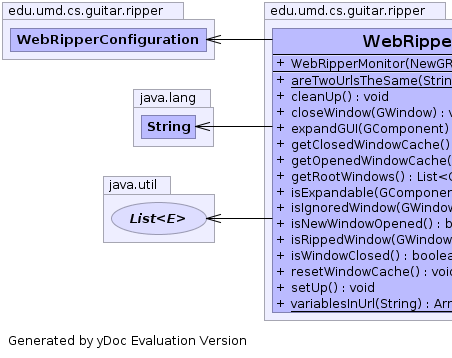
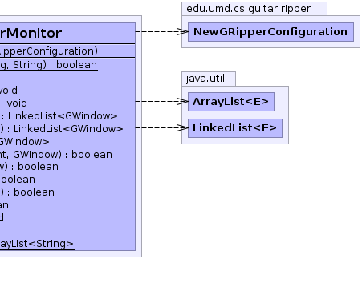

edu.umd.cs.guitar.ripper
Class WebRipperMonitor
java.lang.Object
 edu.umd.cs.guitar.ripper.GRipperMonitor
edu.umd.cs.guitar.ripper.WebRipperMonitor
edu.umd.cs.guitar.ripper.GRipperMonitor
edu.umd.cs.guitar.ripper.WebRipperMonitor
public class WebRipperMonitor
- extends edu.umd.cs.guitar.ripper.GRipperMonitor
Monitor for the ripper to handle Web specific features
Generated by yDoc Evaluation Version
- Author:
- Philip Anderson
- See Also:
edu.umd.cs.guitar.ripper.GRipperMonitor-
-
 |
 |
|
Constructor Summary |
WebRipperMonitor(edu.umd.cs.guitar.ripper.NewGRipperConfiguration config)
|
| Methods inherited from class edu.umd.cs.guitar.ripper.GRipperMonitor |
addRippedList, getRipper, setRipper |
| Methods inherited from class java.lang.Object |
clone, equals, finalize, getClass, hashCode, notify, notifyAll, toString, wait, wait, wait |
WebRipperMonitor
public WebRipperMonitor(edu.umd.cs.guitar.ripper.NewGRipperConfiguration config)
cleanUp
public void cleanUp()
- Specified by:
cleanUp in class edu.umd.cs.guitar.ripper.GRipperMonitor
closeWindow
public void closeWindow(edu.umd.cs.guitar.model.GWindow window)
- Specified by:
closeWindow in class edu.umd.cs.guitar.ripper.GRipperMonitor
expandGUI
public void expandGUI(edu.umd.cs.guitar.model.GComponent component)
- Specified by:
expandGUI in class edu.umd.cs.guitar.ripper.GRipperMonitor
isRippedWindow
public boolean isRippedWindow(edu.umd.cs.guitar.model.GWindow window)
- Overrides:
isRippedWindow in class edu.umd.cs.guitar.ripper.GRipperMonitor
areTwoUrlsTheSame
public static boolean areTwoUrlsTheSame(java.lang.String url1,
java.lang.String url2)
variablesInUrl
public static java.util.ArrayList<java.lang.String> variablesInUrl(java.lang.String url)
getClosedWindowCache
public java.util.LinkedList<edu.umd.cs.guitar.model.GWindow> getClosedWindowCache()
- Specified by:
getClosedWindowCache in class edu.umd.cs.guitar.ripper.GRipperMonitor
getOpenedWindowCache
public java.util.LinkedList<edu.umd.cs.guitar.model.GWindow> getOpenedWindowCache()
- Specified by:
getOpenedWindowCache in class edu.umd.cs.guitar.ripper.GRipperMonitor
getRootWindows
public java.util.List<edu.umd.cs.guitar.model.GWindow> getRootWindows()
- Specified by:
getRootWindows in class edu.umd.cs.guitar.ripper.GRipperMonitor
isExpandable
public boolean isExpandable(edu.umd.cs.guitar.model.GComponent component,
edu.umd.cs.guitar.model.GWindow window)
- Specified by:
isExpandable in class edu.umd.cs.guitar.ripper.GRipperMonitor
isIgnoredWindow
public boolean isIgnoredWindow(edu.umd.cs.guitar.model.GWindow window)
- Specified by:
isIgnoredWindow in class edu.umd.cs.guitar.ripper.GRipperMonitor
isNewWindowOpened
public boolean isNewWindowOpened()
- Specified by:
isNewWindowOpened in class edu.umd.cs.guitar.ripper.GRipperMonitor
isWindowClosed
public boolean isWindowClosed()
- Specified by:
isWindowClosed in class edu.umd.cs.guitar.ripper.GRipperMonitor
resetWindowCache
public void resetWindowCache()
- Specified by:
resetWindowCache in class edu.umd.cs.guitar.ripper.GRipperMonitor
setUp
public void setUp()
- Specified by:
setUp in class edu.umd.cs.guitar.ripper.GRipperMonitor